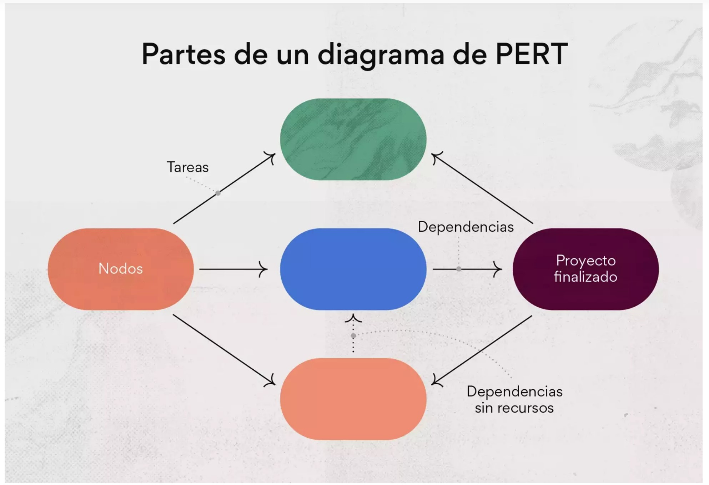

PERT: conceptos
El diagrama de PERT es una herramienta que se utiliza para programar, organizar y planificar en detalle las tareas de un proyecto.
El acrónimo PERT significa Program Evaluation and Review Technique, que traducido es Técnica de revisión y evaluación de programas. Proporciona una representación visual del cronograma de un proyecto y desglosa las tareas individuales. Este diagrama es similar al diagrama de Gantt, pero su estructura es diferente.
Este diagrama consta de algunos pasos que van desde la fecha de inicio del proyecto hasta su fecha de finalización. Para su implementarlo en las emergencias, abarcaremos cinco pasos, te mostraré un ejemplo y te explicaré cómo usar un diagrama de PERT de forma efectiva para sacarle provecho.
Cómo funciona el diagrama de PERT
 El diagrama de PERT es una representación visual de las tareas de un proyecto y las dependencias conectadas a cada una. Puedes usarlo para crear un programa inicial y un cronograma estimado que puedes compartir con los participantes del proyecto antes de que el proyecto comience.
El diagrama de PERT es una representación visual de las tareas de un proyecto y las dependencias conectadas a cada una. Puedes usarlo para crear un programa inicial y un cronograma estimado que puedes compartir con los participantes del proyecto antes de que el proyecto comience.
Crear una hoja de ruta del proyecto, en forma de diagrama de PERT, te ayudará a realizar varias actividades de planificación del proyecto, entre las que se incluyen las siguientes:
- Obtener la aprobación de los responsables de las UBI con respecto al programa y al cronograma.
- Comunicar los objetivos del proyecto a los participantes
- Crear un plan detallado visual de un proyecto complejo
- Estimar el tiempo necesario para finalizar tareas individuales
- Para aprovechar al máximo tu diagrama de PERT, primero debes comprender los pasos necesarios para crear uno y cómo trazar tu diagrama de manera visual.
Cómo realizar un proyecto PERT
Cómo hacer un diagrama de PERT: 5 pasosPara crear un diagrama de PERT, sigue los cinco pasos del ciclo de vida del proceso, que incluye desde la identificación de las tareas hasta la gestión de la finalización del proyecto.
1. Dentifica las tareas del proyecto
El primer paso para crear un diagrama de PERT exitoso implica identificar y recopilar la información y las tareas necesarias para el proyecto. Puedes comenzar la fase de planificación del proyecto de manera similar a como normalmente lo harías con la fase inicial de gestión del proyecto. Esto puede incluir lo siguiente:
- Un caso de negocios
- Un plan de comunicación
- Una reunión inicial
La planificación anticipada garantiza que estarás preparado para definir las dependencias y conectar las tareas durante las fases subsiguientes.
2. Define las dependencias de las tareas
La dependencia de una tarea es una tarea o un hito que depende de que se finalice otra tarea antes de poder iniciarse. Esto a veces se denomina relación lógica y a menudo se usa en una estructura de desglose del trabajo.
Crear dependencias puede ayudarte a realizar un seguimiento adecuado del trabajo, garantizar que las tareas se finalicen y establecer una comunicación clara. En el caso de proyectos complejos, planifica los cronogramas y la duración del proyecto de manera adecuada y con anticipación.
En un diagrama de PERT, las dependencias se visualizan conectando y numerando las tareas. Si bien no es tan completo como otros métodos, como lo es la estructura de desglose del trabajo, ofrece una visualización general de las tareas y el trabajo necesario para completarlas.
3. Vincula las tareas del proyecto
Una vez que se han creado las dependencias de las tareas, puedes crear tu diagrama de PERT vinculando las tareas del proyecto entre sí. Estas conexiones constan de flechas, que representan tareas, y nodos, que representan eventos o hitos.
{kind=link}
Por ejemplo, coloca los eventos principales en los nodos (representados como círculos o cuadrados numerados) y traza flechas de tareas que representarán las dependencias necesarias para finalizar los eventos.
Este diseño te proporciona una estructura de proyecto simple que, aunque no es demasiado específica, los participantes del proyecto pueden comprender fácilmente.
4. Establece el cronograma del proyecto
A esta altura debes estimar la duración total del proyecto utilizando el método de la ruta crítica (CPM) y la fórmula de PERT. La ruta crítica es la secuencia más larga de tareas que deben llevarse a cabo para finalizar con éxito un proyecto.
El objetivo es encontrar el camino más largo que llevará más tiempo para calcular la duración total del proyecto que sea más corta. Las estimaciones de tiempo se pueden calcular en función de lo siguiente:
La duración siendo optimista.
La duración siendo pesimista.
La duración más probable.
Puedes usar la fórmula de PERT para calcular la duración esperada de una tarea y el momento de su finalización de la siguiente manera: (O + (4 MP) + P) 梅 6. Esto se puede medir en minutos, horas, días o incluso semanas.
Por ejemplo, si la duración siendo optimista es de 30minutos, la duración siendo pesimista es de 60minutos y la duración más probable es de 45minutos, la fórmula de PERT sería así: (30min + (4 45min) + 60min) 梅 6 = 45 minutos.
Una vez que hayas calculado la duración esperada por tarea, puedes sumar cada una de las estimaciones de tu ruta crítica para obtener un promedio del cronograma del proyecto.
5. Gestiona el progreso de las tareas
El paso final para crear un diagrama de PERT es gestionar el progreso de las tareas hasta la finalización del proyecto. Esto se puede hacer cerrando dependencias y mitigando problemas a lo largo del camino hasta que se finalicen todas las tareas.
Recuerda que un diagrama de PERT debe actualizarse a lo largo del proyecto a medida que se van dando cambios. Esto podría combinarse con un proceso de control de cambios, que ayude a detallar y comunicar los cambios del proyecto.
Una vez que se hayan finalizado todas las tareas del proyecto, puedes archivar materiales en un espacio compartido para consultarlos más adelante si fuese necesario.
Diagrama de PERT vs. diagrama de Gantt
La gente a veces confunde los diagramas de PERT con los diagramas de Gantt, aunque tienen algunas diferencias clave. No solo difieren en su apariencia visual, sino que también brindan diferentes características según las necesidades de tu equipo.
{kind=link}
Estas son algunas características clave que debes tener en cuenta al decidir cuál es el adecuado para ti:
diagramas de PERT son diagramas de flujo, diagramas de Gantt son gráficos de barras:
Una de las mayores diferencias está en su diseño visual. Los diagramas de Gantt adoptan un enfoque de diagrama de barras tradicional, mientras que los diagramas de PERT tienen una apariencia menos estructurada y adoptan diferentes diseños según el proyecto.BVFDVDVLos diagramas de Gantt ofrecen organización, PERT ofrecen personalización:
Los diagramas de Gantt están organizados de manera más estructural. Por otro lado, los diagramas de PERT permiten una personalización de diseño simple que es mejor para las necesidades de proyectos de nivel más general.Los diagramas de PERT se pueden utilizar antes de que comience el proyecto:
Dado que los diagramas de PERT ofrecen un plan de proyecto y un diseño de cronograma simples, a menudo se usan como guías visuales durante el inicio del proyecto. Los gerentes de proyectos luego usan otro método, como una estructura de desglose del trabajo o un diagrama de Gantt, específicamente para planificar en detalle las tareas y dependencias del proyecto.
La cantidad mínima de tiempo necesaria para realizar una tarea.
La cantidad máxima de tiempo necesaria para realizar una tarea.
La mejor estimación de cuánto tiempo se necesitará para realizar una tarea.